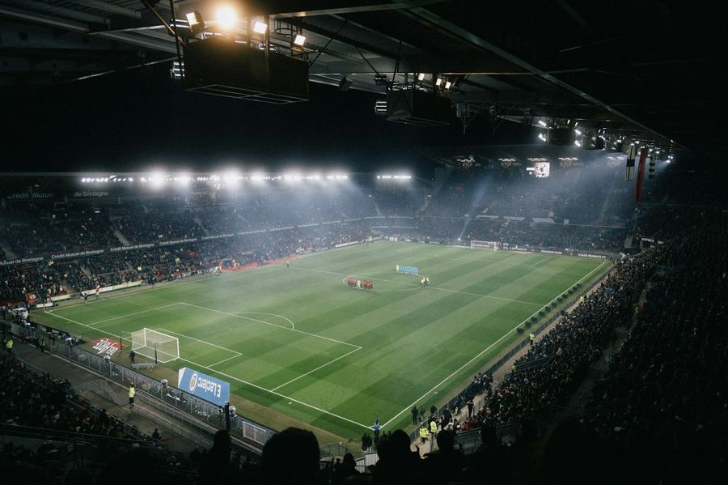
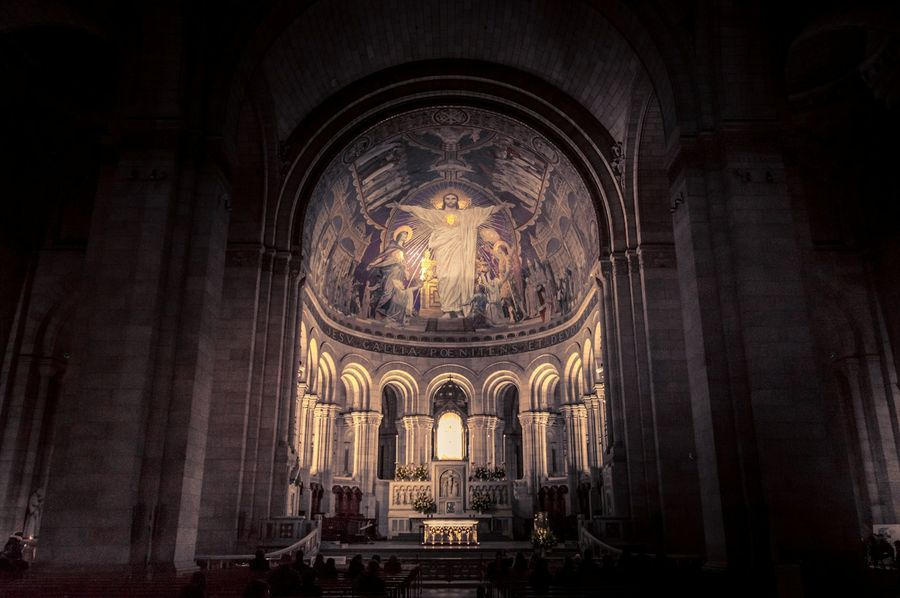
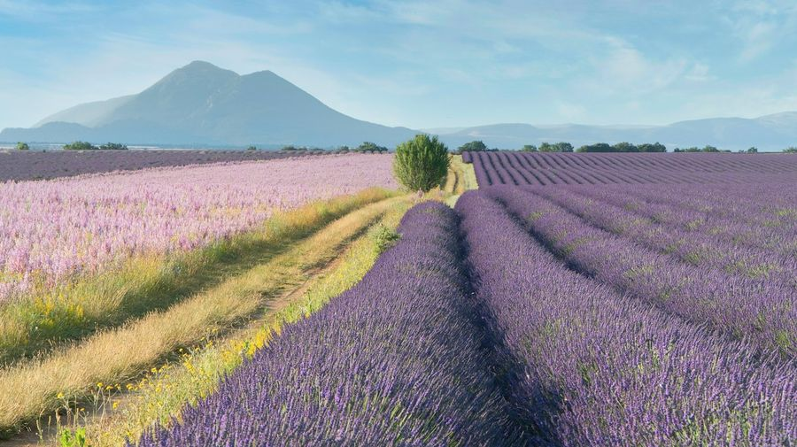
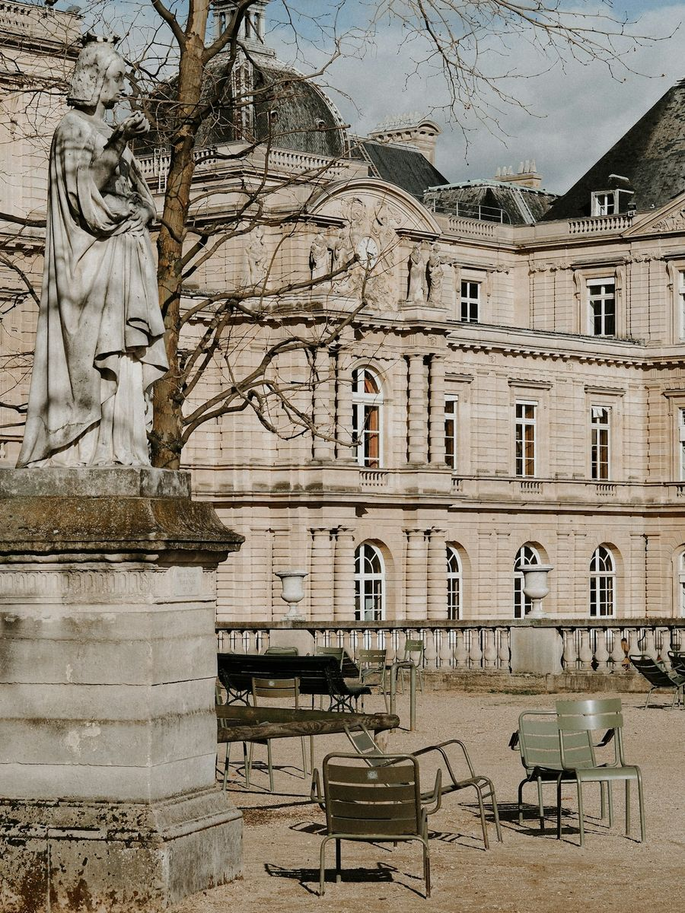
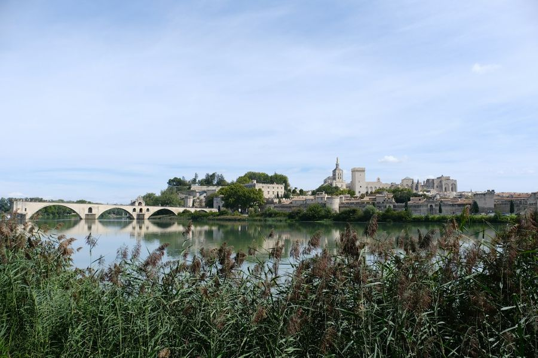
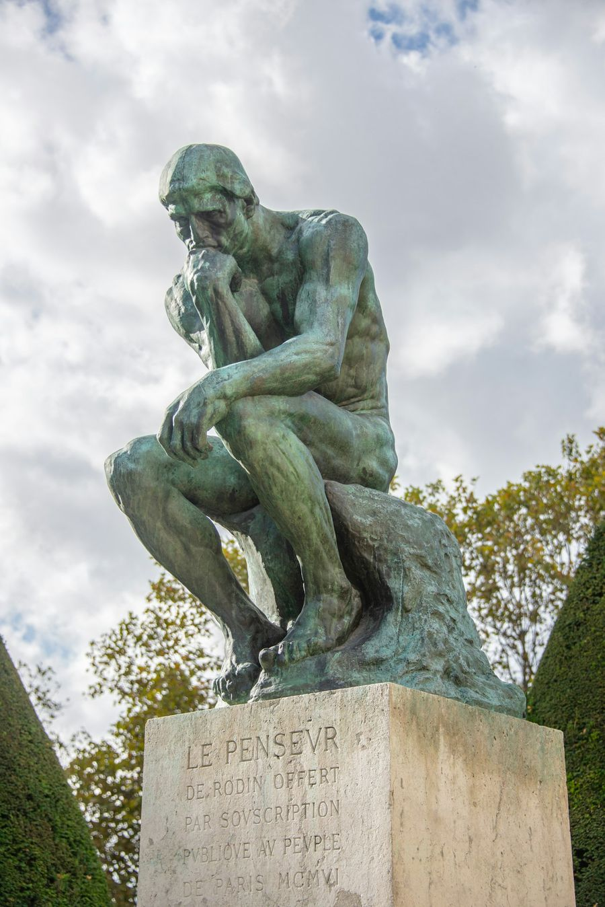

FABRIZIO · lundi 23 novembre 2026
Vocabulaire, expressions et grammaireSupporter une équipe, passer du bon temps en famille · le discours indirect au passéTifare per una squadra, passare dei bei momenti in famiglia · il discorso indiretto al passato
Le lac d'Annecy et les montagnes à l'automne · Haute-Savoie
Fabrizio, voici la leçon d'aujourd'hui : le vocabulaire, quatre points de grammaire, cinq exercices, un petit thème et une réflexion. Touchez une carte pour la retourner, 🔊 pour écouter et IT pour la traduction.
Fabrizio, ecco la lezione di oggi: il lessico, quattro punti di grammatica, cinque esercizi, un piccolo tema e una riflessione. Tocchi una carta per girarla, 🔊 per ascoltare e IT per la traduzione.
1
Vocabulaire et expressions
Lessico ed espressioni

supporter une équipe · être un supporteur
verbe du 1er groupe · nom masculin (au féminin : une supportrice)
verbo del 1° gruppo · sostantivo maschile (al femminile: une supportrice)
Le Roazhon Park, le stade du Stade rennais, un soir de match · Rennes
↻ toucher pour retourner · toccare per girare
supporter une équipe · être un supporteur · tifare per una squadra · essere un tifoso
Supporter une équipe = l'encourager, être pour elle. Le nom s'écrit supporter ou supporteur. Attention : dans la vie courante, supporter veut surtout dire tolérer : « Je ne supporte pas le bruit. »
Supporter une équipe = incoraggiarla, tifare per lei. Il sostantivo si scrive supporter o supporteur. Attenzione: nella vita di tutti i giorni supporter significa soprattutto sopportare: «Je ne supporte pas le bruit.» (Non sopporto il rumore.)
Je supporte l'Olympique de Marseille depuis que je suis enfant.
Tifo per l'Olympique de Marseille da quando sono bambino.
Les supporteurs rennais chantent pendant tout le match.
I tifosi del Rennes cantano per tutta la partita.
↻
rejoindre
verbe du 3e groupe : je rejoins, nous rejoignons, j'ai rejoint
verbo del 3° gruppo: je rejoins, nous rejoignons, j'ai rejoint
Saint-Malo, la cité corsaire, au coucher du soleil · Ille-et-Vilaine
↻ toucher pour retourner · toccare per girare
rejoindre · raggiungere · entrare in, unirsi a
Rejoindre quelqu'un = aller retrouver une personne. Rejoindre un club, une équipe, un groupe = en devenir membre. Sans préposition : on rejoint quelqu'un, on rejoint un club.
Rejoindre quelqu'un = raggiungere una persona. Rejoindre un club, une équipe, un groupe = entrarne a far parte. Senza preposizione: si dice rejoindre quelqu'un, rejoindre un club.
J'ai rejoint un club de supporteurs l'année dernière.
L'anno scorso sono entrato in un club di tifosi.
Je te rejoins devant le stade à vingt heures.
Ti raggiungo davanti allo stadio alle venti.
La conjugaison complète est dans la grammaire, point A.
La coniugazione completa è nella grammatica, punto A.
↻

toujours
adverbe
avverbio
La mosaïque du Christ en gloire, basilique du Sacré-Cœur · Montmartre, Paris
↻ toucher pour retourner · toccare per girare
toujours · sempre · ancora
Avec un verbe au présent, toujours exprime une habitude : une action qui se répète chaque fois. Il peut aussi vouloir dire encore. Voir la grammaire, point B.
Con un verbo al presente, toujours esprime un'abitudine: un'azione che si ripete ogni volta. Può anche voler dire encore (ancora). Vedi la grammatica, punto B.
Le dimanche, il décide toujours d'aller au stade.
La domenica decide sempre di andare allo stadio.
Tu habites toujours à Milan ?
Abiti ancora a Milano?
↻
du lundi au vendredi
locution : du … au …
locuzione: du … au …
La place de la Bourse et le miroir d'eau, la nuit · Bordeaux
↻ toucher pour retourner · toccare per girare
du lundi au vendredi · dal lunedì al venerdì
Du … au … indique le début et la fin d'une période : du 1er au 15 mars, du matin au soir. Voir la grammaire, point C.
Du … au … indica l'inizio e la fine di un periodo: dal 1° al 15 marzo, dalla mattina alla sera. Vedi la grammatica, punto C.
Je travaille du lundi au vendredi, et le samedi je vais au stade.
Lavoro dal lunedì al venerdì, e il sabato vado allo stadio.
Le musée est ouvert du mardi au dimanche.
Il museo è aperto dal martedì alla domenica.
↻
8 h du matin · 3 h de l'après-midi · 9 h du soir
expressions de l'heure
espressioni dell'ora
La tour Eiffel illuminée, le soir · Paris
↻ toucher pour retourner · toccare per girare
8 h du matin · 3 h de l'après-midi · 9 h du soir · le 8 di mattina · le 3 del pomeriggio · le 9 di sera
Pour préciser le moment de la journée, on ajoute du matin, de l'après-midi ou du soir. Pour les horaires officiels (trains, magasins), on compte jusqu'à 24 : 21 h = vingt et une heures.
Per precisare il momento della giornata si aggiunge du matin, de l'après-midi o du soir. Per gli orari ufficiali (treni, negozi) si conta fino a 24: 21 h = le ventuno.
Le match commence à neuf heures du soir.
La partita comincia alle nove di sera.
Nous dînons vers huit heures ou neuf heures du soir.
Ceniamo verso le otto o le nove di sera.
On dit midi et minuit, jamais « douze heures du soir ».
Si dice midi (mezzogiorno) e minuit (mezzanotte), mai «douze heures du soir».
↻
bien que + subjonctif
conjonction
congiunzione
Les falaises d'Étretat · Normandie
↻ toucher pour retourner · toccare per girare
bien que + subjonctif · benché, sebbene
Bien que introduit une concession : un fait qui n'empêche pas l'autre. Il est toujours suivi du subjonctif, comme « benché » en italien.
Bien que introduce una concessione: un fatto che non impedisce l'altro. È sempre seguito dal congiuntivo, come «benché» in italiano.
Bien qu'il fasse froid, nous allons nous promener sur les falaises.
Benché faccia freddo, andiamo a passeggiare sulle scogliere.
Bien que mon équipe perde souvent, je la supporte toujours.
Benché la mia squadra perda spesso, tifo sempre per lei.
Devant il, elle, on : bien qu'il, bien qu'elle, bien qu'on.
Davanti a il, elle, on: bien qu'il, bien qu'elle, bien qu'on.
↻

prendre du temps
expression (prendre : verbe du 3e groupe)
espressione (prendre: verbo del 3° gruppo)
Champ de lavande sur le plateau de Valensole · Provence
↻ toucher pour retourner · toccare per girare
prendre du temps · richiedere tempo · prendersi del tempo
Deux sens : ça prend du temps = cela demande beaucoup de temps ; prendre du temps pour soi = s'accorder un moment. Prendre son temps = ne pas se presser.
Due significati: ça prend du temps = richiede tempo, ci vuole tempo; prendre du temps pour soi = concedersi un momento. Prendre son temps = prendersela comoda, non avere fretta.
Apprendre une langue, ça prend du temps.
Imparare una lingua richiede tempo.
Le dimanche, je prends du temps pour moi : je lis et je me promène.
La domenica mi prendo del tempo per me: leggo e passeggio.
↻

passer du bon temps en famille
expression
espressione
Le jardin et le palais du Luxembourg · Paris
↻ toucher pour retourner · toccare per girare
passer du bon temps en famille · passare dei bei momenti in famiglia
Passer du bon temps = vivre des moments agréables, s'amuser. On dit aussi passer un bon moment, passer une bonne soirée.
Passer du bon temps = vivere momenti piacevoli, divertirsi. Si dice anche passer un bon moment (passare un bel momento), passer une bonne soirée (passare una bella serata).
Le week-end, nous passons du bon temps en famille au jardin du Luxembourg.
Il fine settimana passiamo dei bei momenti in famiglia ai Giardini del Lussemburgo.
Merci pour le dîner, on a passé du bon temps !
Grazie per la cena, ci siamo divertiti molto!
↻
un bien personnel
nom masculin (les biens)
sostantivo maschile (les biens)
Le château de Chenonceau sur le Cher · Indre-et-Loire
↻ toucher pour retourner · toccare per girare
un bien personnel · un bene personale
Un bien = une chose qui nous appartient : une maison, une voiture, de l'argent. Un bien personnel appartient à une personne, et non à une entreprise ou à l'État.
Un bien = una cosa che ci appartiene: una casa, un'auto, del denaro. Un bien personnel appartiene a una persona, e non a un'azienda o allo Stato.
Cette voiture est un bien personnel, ce n'est pas une voiture de société.
Quest'auto è un bene personale, non è un'auto aziendale.
Le roi Henri II a offert le château de Chenonceau à Diane de Poitiers : il est devenu son bien personnel.
Il re Enrico II ha regalato il castello di Chenonceau a Diane de Poitiers: è diventato un suo bene personale.
Ne confondez pas le bien (nom : il bene) et bien (adverbe : bene).
Non confonda le bien (sostantivo: il bene) e bien (avverbio: bene).
↻
d'une part…, d'autre part…
locution adverbiale, connecteur logique
locuzione avverbiale, connettivo logico
Rocamadour, accroché à la falaise · Lot
↻ toucher pour retourner · toccare per girare
d'une part…, d'autre part… · da una parte…, dall'altra… · inoltre
D'autre part ajoute un deuxième argument, souvent après d'une part. En français, ce n'est pas une opposition, c'est une addition (= de plus). Pour opposer, on dit en revanche ou par contre.
D'autre part aggiunge un secondo argomento, spesso dopo d'une part. In francese non è un'opposizione, è un'aggiunta (= inoltre). Per opporre si dice en revanche o par contre (invece).
D'une part, le sport est bon pour la santé ; d'autre part, il crée des liens.
Da una parte lo sport fa bene alla salute; dall'altra crea legami.
Ce village est magnifique. D'autre part, il est facile d'y aller en train.
Questo villaggio è magnifico. Inoltre è facile andarci in treno.
↻
si (= chaque fois que) · chaque fois
conjonction · locution
congiunzione · locuzione
Saint-Malo intra-muros, un matin d'hiver · Bretagne
↻ toucher pour retourner · toccare per girare
si (= chaque fois que) · chaque fois · se (= ogni volta che) · ogni volta
Si + présent, suivi d'un présent, exprime une habitude ou une vérité générale : si = chaque fois que. Chaque fois s'emploie seul ou avec que + indicatif.
Si + presente, seguito da un presente, esprime un'abitudine o una verità generale: si = chaque fois que (ogni volta che). Chaque fois si usa da solo o con que + indicativo.
S'il fait beau, nous allons sur les remparts.
Se fa bel tempo, andiamo sui bastioni.
Chaque fois que je vais à Saint-Malo, je mange des crêpes.
Ogni volta che vado a Saint-Malo, mangio le crêpe.
si + il, ils → s'il, s'ils ; mais si elle, sans élision.
si + il, ils → s'il, s'ils; ma si elle, senza elisione.
↻
accueillir
verbe du 3e groupe : j'accueille, nous accueillons, j'ai accueilli
verbo del 3° gruppo: j'accueille, nous accueillons, j'ai accueilli
La Seine et la tour Eiffel vues depuis Notre-Dame · Paris
↻ toucher pour retourner · toccare per girare
accueillir · accogliere, ospitare
Recevoir quelqu'un chez soi ou dans un lieu. Attention à l'orthographe : -cueill-. Au présent, il se conjugue comme un verbe en -er : j'accueille, tu accueilles, il accueille.
Ricevere qualcuno a casa propria o in un luogo. Attenzione all'ortografia: -cueill-. Al presente si coniuga come un verbo in -er: j'accueille, tu accueilles, il accueille.
Paris accueille des millions de visiteurs chaque année.
Parigi accoglie milioni di visitatori ogni anno.
Mes grands-parents nous accueillent toujours avec un bon repas.
I miei nonni ci accolgono sempre con un buon pasto.
Au futur : j'accueillerai, et non « accueillirai ».
Al futuro: j'accueillerai, e non «accueillirai».
↻

danser
verbe du 1er groupe · la danse, un danseur, une danseuse
verbo del 1° gruppo · la danse, un danseur, une danseuse
Le pont Saint-Bénézet, dit pont d'Avignon, et le palais des Papes · Vaucluse
↻ toucher pour retourner · toccare per girare
danser · ballare, danzare
Danser est régulier. On dit aller danser, danser la valse, danser avec quelqu'un. Une vieille chanson française dit : « Sur le pont d'Avignon, on y danse. »
Danser è regolare. Si dice aller danser (andare a ballare), danser la valse (ballare il valzer), danser avec quelqu'un (ballare con qualcuno). Una vecchia canzone francese dice: «Sur le pont d'Avignon, on y danse» (Sul ponte di Avignone si balla).
Après la victoire, les supporteurs dansaient dans les rues.
Dopo la vittoria i tifosi ballavano per le strade.
Samedi soir, nous irons danser avec des amis.
Sabato sera andremo a ballare con degli amici.
↻
2
Grammaire
Grammatica
A. Le verbe rejoindre au présent de l'indicatif
A. Il verbo rejoindre al presente indicativo
Rejoindre est un verbe du 3e groupe en -oindre. Au singulier, le d disparaît ; au pluriel, on trouve -gn-.
Rejoindre è un verbo del 3° gruppo in -oindre. Al singolare la d scompare; al plurale si trova -gn-.
Participe passé : rejoint. Au passé composé, avec avoir : j'ai rejoint, nous avons rejoint.
Participio passato: rejoint. Al passé composé, con avoir: j'ai rejoint, nous avons rejoint.
Nous rejoignons nos amis au café après le match.
Raggiungiamo i nostri amici al bar dopo la partita.
Mon frère a rejoint une équipe de football amateur.
Mio fratello è entrato in una squadra di calcio dilettantistica.
💡 Même modèle : joindre, craindre, peindre, éteindre (je crains, nous craignons ; je peins, nous peignons).
Stesso modello: joindre (unire), craindre (temere), peindre (dipingere), éteindre (spegnere).
B. Toujours pour exprimer l'habitude
B. Toujours per esprimere l'abitudine
Avec le présent, toujours indique une action habituelle, qui se répète chaque fois.
Con il presente, toujours indica un'azione abituale, che si ripete ogni volta.
Il décide toujours d'aller au stade le dimanche.
Decide sempre di andare allo stadio la domenica.
Pour une habitude dans le passé, on utilise l'imparfait :
Per un'abitudine nel passato si usa l'imparfait:
Quand il était jeune, il allait toujours au stade avec son père.
Quando era giovane, andava sempre allo stadio con suo padre.
Où placer toujours ?
Dove si mette toujours?
Après le verbe conjugué. Aux temps composés, entre l'auxiliaire et le participe passé.
Dopo il verbo coniugato. Nei tempi composti, tra l'ausiliare e il participio passato.
Il a toujours aimé le football.
Gli è sempre piaciuto il calcio.
Toujours = encore
Toujours = ancora
Il pleut toujours. Tu habites toujours à Milan ?
Piove ancora. Abiti ancora a Milano?
💡 pas toujours = non sempre : « Il ne gagne pas toujours. » · toujours pas = ancora no : « Il n'est toujours pas arrivé. »
pas toujours = non sempre: «Non vince sempre.» · toujours pas = ancora no: «Non è ancora arrivato.»
Autres mots de l'habitude : d'habitude, en général, chaque fois, tous les jours, le lundi.
Altre parole dell'abitudine: d'habitude (di solito), en général (in genere), chaque fois (ogni volta), tous les jours (tutti i giorni), le lundi (il lunedì).
C. Du lundi au vendredi · de 8 h à 18 h · du matin, du soir
C. Dal lunedì al venerdì · dalle 8 alle 18 · di mattina, di sera
| Avec… | On dit |
|---|---|
| les jours, les dates | du lundi au vendredi · du 2 au 6 décembre dal lunedì al venerdì · dal 2 al 6 dicembre |
| les heures | de 8 h à 18 h dalle 8 alle 18 |
| les mois, les années | de janvier à mars · de 2020 à 2026 da gennaio a marzo · dal 2020 al 2026 |
Lundi ou le lundi ?
Lundi o le lundi?
Lundi, je vais au stade. (ce lundi-ci, une seule fois)
Lunedì vado allo stadio. (questo lunedì, una volta sola)
Le lundi, je vais au stade. (tous les lundis : habitude)
Il lunedì vado allo stadio. (tutti i lunedì: abitudine)
Le moment de la journée
Il momento della giornata
à 8 heures du matin · à 3 heures de l'après-midi · à 9 heures du soir
alle 8 di mattina · alle 3 del pomeriggio · alle 9 di sera
💡 de l'après-midi avec l' devant la voyelle. Et toujours midi, minuit.
de l'après-midi con l' davanti alla vocale. E sempre midi (mezzogiorno), minuit (mezzanotte).
D. Du discours direct au discours indirect au passé
D. Dal discorso diretto al discorso indiretto al passato
Quand le verbe qui introduit les paroles (dire, expliquer, répondre, annoncer…) est au passé, les temps des paroles rapportées changent.
Quando il verbo che introduce le parole (dire, expliquer, répondre, annoncer…) è al passato, i tempi delle parole riferite cambiano.
Il dit : « Je suis fatigué. » → Il a dit qu'il était fatigué.
Dice: «Sono stanco.» → Ha detto che era stanco.
1 · Les temps qui changent I tempi che cambiano
| Discours direct | Discours indirect au passé | |
|---|---|---|
| présent | → | imparfait |
« Je supporte l'OM. » → Il a dit qu'il supportait l'OM. Ha detto che tifava per l'OM. | ||
| passé composé | → | plus-que-parfait |
« J'ai rejoint le club. » → Il a dit qu'il avait rejoint le club. Ha detto che era entrato nel club. | ||
| futur simple | → | conditionnel présent |
« Je viendrai au match. » → Il a dit qu'il viendrait au match. Ha detto che sarebbe venuto alla partita. | ||
2 · Attention : aucune transformation ! Attenzione: nessuna trasformazione!
imparfait
« Il faisait froid. » → Il a dit qu'il faisait froid.
Ha detto che faceva freddo.
plus-que-parfait
« J'avais déjà dîné. » → Il a dit qu'il avait déjà dîné.
Ha detto che aveva già cenato.
conditionnel
« J'aimerais danser. » → Elle a dit qu'elle aimerait danser.
Ha detto che le sarebbe piaciuto ballare.
subjonctif
« Il faut que tu viennes. » → Il a dit qu'il fallait que je vienne.
Ha detto che bisognava che io venissi.
infinitif
« Je veux danser. » → Elle a dit qu'elle voulait danser.
Ha detto che voleva ballare.
3 · Les indicateurs de temps Gli indicatori di tempo
| Discours direct | Discours indirect au passé | |
|---|---|---|
| aujourd'hui | → | ce jour-là |
| oggi → quel giorno | ||
| maintenant | → | à ce moment-là |
| adesso → in quel momento | ||
| hier | → | la veille |
| ieri → il giorno prima | ||
| demain | → | le lendemain |
| domani → il giorno dopo | ||
| avant-hier | → | l'avant-veille |
| l'altro ieri → due giorni prima | ||
| après-demain | → | le surlendemain |
| dopodomani → due giorni dopo | ||
| ce soir | → | ce soir-là |
| stasera → quella sera | ||
| cette semaine | → | cette semaine-là |
| questa settimana → quella settimana | ||
| la semaine dernière | → | la semaine précédente |
| la settimana scorsa → la settimana precedente | ||
| la semaine prochaine | → | la semaine suivante |
| la settimana prossima → la settimana seguente | ||
| il y a deux jours | → | deux jours plus tôt |
| due giorni fa → due giorni prima | ||
| dans deux jours | → | deux jours plus tard |
| tra due giorni → due giorni dopo | ||
Il a dit : « Je partirai demain. » → Il a dit qu'il partirait le lendemain.
Ha detto: «Partirò domani.» → Ha detto che sarebbe partito il giorno dopo.
Elle a dit : « J'ai dansé hier. » → Elle a dit qu'elle avait dansé la veille.
Ha detto: «Ho ballato ieri.» → Ha detto che aveva ballato il giorno prima.
💡 Les pronoms et les possessifs changent aussi : « Je rejoins mon club. » → Il a dit qu'il rejoignait son club. Si le verbe introducteur est au présent (il dit que…), on ne change rien : Il dit qu'il est fatigué.
Cambiano anche i pronomi e i possessivi: «Raggiungo il mio club.» → Ha detto che raggiungeva il suo club. Se il verbo introduttivo è al presente (il dit que…), non si cambia nulla: Dice che è stanco.
3
Exercices
Esercizi
01
EXERCICE 1 · VOCABULAIRE
Choisissez le bon mot.
Scelga la parola giusta.
1
Mon père ______ l'équipe de Lyon depuis quarante ans.
Mio padre tifa per la squadra di Lione da quarant'anni.
Mon père supporte l'équipe de Lyon depuis quarante ans.
Mio padre tifa per la squadra di Lione da quarant'anni.
2
Je te ______ au café dans dix minutes.
Ti raggiungo al bar tra dieci minuti.
Je te rejoins au café dans dix minutes.
Ti raggiungo al bar tra dieci minuti.
3
Le magasin est ouvert ______ lundi ______ samedi.
Il negozio è aperto dal lunedì al sabato.
Le magasin est ouvert du lundi au samedi.
Il negozio è aperto dal lunedì al sabato.
4
______ il pleuve, nous allons au stade.
Benché piova, andiamo allo stadio.
Bien qu'il pleuve, nous allons au stade.
Benché piova, andiamo allo stadio.
5
Apprendre à danser, ça ______ du temps.
Imparare a ballare richiede tempo.
Apprendre à danser, ça prend du temps.
Imparare a ballare richiede tempo.
6
Ce week-end, nous avons passé du ______ temps en famille.
Questo fine settimana abbiamo passato dei bei momenti in famiglia.
Ce week-end, nous avons passé du bon temps en famille.
Questo fine settimana abbiamo passato dei bei momenti in famiglia.
7
La voiture de l'entreprise n'est pas un ______ personnel.
L'auto dell'azienda non è un bene personale.
La voiture de l'entreprise n'est pas un bien personnel.
L'auto dell'azienda non è un bene personale.
8
D'une part, cet hôtel est cher ; ______, il est loin du centre.
Da una parte quest'albergo è caro; dall'altra è lontano dal centro.
D'une part, cet hôtel est cher ; d'autre part, il est loin du centre.
Da una parte quest'albergo è caro; dall'altra è lontano dal centro.
9
L'hôtel ______ ses clients avec un verre de champagne.
L'albergo accoglie i clienti con un bicchiere di champagne.
L'hôtel accueille ses clients avec un verre de champagne.
L'albergo accoglie i clienti con un bicchiere di champagne.
10
Le match commence à neuf heures ______.
La partita comincia alle nove di sera.
Le match commence à neuf heures du soir.
La partita comincia alle nove di sera.
02
EXERCICE 2 · TEXTE À TROUS
Lisez l'histoire et conjuguez le verbe au temps indiqué.
Legga la storia e coniughi il verbo al tempo indicato.
Le dimanche de Paolo · La domenica di Paolo
vivre · présent
1
Paolo est italien, mais il ______ à Lyon depuis dix ans.
Paolo è italiano, ma vive a Lione da dieci anni.
Paolo est italien, mais il vit à Lyon depuis dix ans.
Paolo è italiano, ma vive a Lione da dieci anni.
rejoindre · passé composé
2
Il y a trois ans, il ______ un club de supporteurs de l'Olympique lyonnais.
Tre anni fa è entrato in un club di tifosi dell'Olympique Lione.
Il y a trois ans, il a rejoint un club de supporteurs de l'Olympique lyonnais.
Tre anni fa è entrato in un club di tifosi dell'Olympique Lione.
décider · présent
3
Du lundi au vendredi, il travaille dans une banque, mais le dimanche, il ______ toujours d'aller au stade.
Dal lunedì al venerdì lavora in una banca, ma la domenica decide sempre di andare allo stadio.
Du lundi au vendredi, il travaille dans une banque, mais le dimanche, il décide toujours d'aller au stade.
Dal lunedì al venerdì lavora in una banca, ma la domenica decide sempre di andare allo stadio.
emmener · imparfait
4
Quand il était petit, son père l'______ toujours voir les matchs de la Juventus.
Quando era piccolo, suo padre lo portava sempre a vedere le partite della Juventus.
Quand il était petit, son père l'emmenait toujours voir les matchs de la Juventus.
Quando era piccolo, suo padre lo portava sempre a vedere le partite della Juventus.
perdre · subjonctif présent
5
Bien que son équipe ______ parfois, il reste un supporteur fidèle.
Benché la sua squadra perda a volte, resta un tifoso fedele.
Bien que son équipe perde parfois, il reste un supporteur fidèle.
Benché la sua squadra perda a volte, resta un tifoso fedele.
danser · passé composé
6
La semaine dernière, après la victoire, les supporteurs ______ dans les rues jusqu'à minuit.
La settimana scorsa, dopo la vittoria, i tifosi hanno ballato per le strade fino a mezzanotte.
La semaine dernière, après la victoire, les supporteurs ont dansé dans les rues jusqu'à minuit.
La settimana scorsa, dopo la vittoria, i tifosi hanno ballato per le strade fino a mezzanotte.
accueillir · futur simple
7
Ce soir, ses amis l'______ chez eux pour regarder le match.
Stasera i suoi amici lo accoglieranno a casa loro per guardare la partita.
Ce soir, ses amis l'accueilleront chez eux pour regarder le match.
Stasera i suoi amici lo accoglieranno a casa loro per guardare la partita.
prendre · subjonctif présent
8
Mais sa femme lui dit : « Il faudrait que tu ______ aussi du temps pour la famille ! »
Ma sua moglie gli dice: «Dovresti prenderti anche un po' di tempo per la famiglia!»
Mais sa femme lui dit : « Il faudrait que tu prennes aussi du temps pour la famille ! »
Ma sua moglie gli dice: «Dovresti prenderti anche un po' di tempo per la famiglia!»
aimer · conditionnel présent
9
Paolo ______ emmener ses enfants au stade, mais eux, ils préfèrent la danse.
A Paolo piacerebbe portare i suoi figli allo stadio, ma loro preferiscono la danza.
Paolo aimerait emmener ses enfants au stade, mais eux, ils préfèrent la danse.
A Paolo piacerebbe portare i suoi figli allo stadio, ma loro preferiscono la danza.
passer · futur simple
10
Alors dimanche prochain, ils ______ du bon temps en famille au bord du lac d'Annecy.
Allora domenica prossima passeranno dei bei momenti in famiglia in riva al lago di Annecy.
Alors dimanche prochain, ils passeront du bon temps en famille au bord du lac d'Annecy.
Allora domenica prossima passeranno dei bei momenti in famiglia in riva al lago di Annecy.
03
EXERCICE 3 · CONJUGAISON
Conjuguez au présent de l'indicatif : rejoindre et accueillir.
Coniughi al presente indicativo: rejoindre e accueillir.
rejoindre · présent
1
Nous ______ nos amis au stade.
Raggiungiamo i nostri amici allo stadio.
Nous rejoignons nos amis au stade.
Raggiungiamo i nostri amici allo stadio.
rejoindre · présent
2
Elle ______ ses parents à la gare.
Raggiunge i suoi genitori alla stazione.
Elle rejoint ses parents à la gare.
Raggiunge i suoi genitori alla stazione.
rejoindre · présent
3
Vous ______ le groupe ce soir ?
Raggiungete il gruppo stasera?
Vous rejoignez le groupe ce soir ?
Raggiungete il gruppo stasera?
rejoindre · présent
4
Ils ______ l'équipe après le match.
Raggiungono la squadra dopo la partita.
Ils rejoignent l'équipe après le match.
Raggiungono la squadra dopo la partita.
rejoindre · présent
5
Je ______ mes collègues à midi.
Raggiungo i miei colleghi a mezzogiorno.
Je rejoins mes collègues à midi.
Raggiungo i miei colleghi a mezzogiorno.
accueillir · présent
6
Tu ______ toujours tes invités avec le sourire.
Accogli sempre i tuoi ospiti con il sorriso.
Tu accueilles toujours tes invités avec le sourire.
Accogli sempre i tuoi ospiti con il sorriso.
accueillir · présent
7
Nous ______ des étudiants étrangers chaque été.
Ospitiamo degli studenti stranieri ogni estate.
Nous accueillons des étudiants étrangers chaque été.
Ospitiamo degli studenti stranieri ogni estate.
accueillir · présent
8
Le stade ______ quarante mille supporteurs.
Lo stadio accoglie quarantamila tifosi.
Le stade accueille quarante mille supporteurs.
Lo stadio accoglie quarantamila tifosi.
04
EXERCICE 4 · GRAMMAIRE
Choisissez la bonne forme : toujours, du … au …, de … à …, le lundi, du soir.
Scelga la forma giusta: toujours, du … au …, de … à …, le lundi, du soir.
1
Il ______ au stade le samedi.
Va sempre allo stadio il sabato.
Il va toujours au stade le samedi.
Va sempre allo stadio il sabato.
💡 toujours se place après le verbe conjugué.
2
Il ______ le football.
Gli è sempre piaciuto il calcio.
Il a toujours aimé le football.
Gli è sempre piaciuto il calcio.
💡 Aux temps composés : entre l'auxiliaire et le participe passé.
3
Il est minuit et mon fils ne dort ______.
È mezzanotte e mio figlio non dorme ancora.
Il est minuit et mon fils ne dort toujours pas.
È mezzanotte e mio figlio non dorme ancora.
💡 toujours pas = pas encore, ancora no.
4
Je ne gagne ______, mais je joue avec plaisir.
Non vinco sempre, ma gioco volentieri.
Je ne gagne pas toujours, mais je joue avec plaisir.
Non vinco sempre, ma gioco volentieri.
💡 pas toujours = non sempre.
5
La boutique est fermée ______ 12 h ______ 14 h.
Il negozio è chiuso dalle 12 alle 14.
La boutique est fermée de 12 h à 14 h.
Il negozio è chiuso dalle 12 alle 14.
💡 Avec les heures, pas d'article : de … à …
6
Les vacances vont ______ 20 décembre ______ 4 janvier.
Le vacanze vanno dal 20 dicembre al 4 gennaio.
Les vacances vont du 20 décembre au 4 janvier.
Le vacanze vanno dal 20 dicembre al 4 gennaio.
💡 Avec les dates et les jours : du … au …
7
Je fais du sport ______ : c'est mon habitude.
Faccio sport il martedì: è la mia abitudine.
Je fais du sport le mardi : c'est mon habitude.
Faccio sport il martedì: è la mia abitudine.
💡 le mardi = tous les mardis (habitude).
8
Il m'a appelé à trois heures ______.
Mi ha chiamato alle tre del pomeriggio.
Il m'a appelé à trois heures de l'après-midi.
Mi ha chiamato alle tre del pomeriggio.
💡 du matin, du soir, mais de l'après-midi.
05
EXERCICE 5 · PETIT THÈME
Traduisez en français, puis comparez avec la correction.
Traduca in francese, poi confronti con la correzione.
1Tifo per la stessa squadra da vent'anni.
Je supporte la même équipe depuis vingt ans.
Votre traduction était-elle correcte ? La sua traduzione era corretta?
2La domenica decide sempre di andare allo stadio con i suoi amici.
Le dimanche, il décide toujours d'aller au stade avec ses amis.
Votre traduction était-elle correcte ? La sua traduzione era corretta?
3Benché io sia stanco, ti raggiungo stasera alle nove.
Bien que je sois fatigué, je te rejoins ce soir à neuf heures.
Votre traduction était-elle correcte ? La sua traduzione era corretta?
4Lavoro dal lunedì al venerdì, dalle 8 di mattina alle 6 di sera.
Je travaille du lundi au vendredi, de 8 heures du matin à 6 heures du soir.
Votre traduction était-elle correcte ? La sua traduzione era corretta?
5Ogni volta che i miei genitori ci accolgono, passiamo dei bei momenti in famiglia.
Chaque fois que mes parents nous accueillent, nous passons du bon temps en famille.
Votre traduction était-elle correcte ? La sua traduzione era corretta?
6Da una parte lo sport richiede tempo; dall'altra fa bene alla salute.
D'une part, le sport prend du temps ; d'autre part, il est bon pour la santé.
Votre traduction était-elle correcte ? La sua traduzione era corretta?
4
Réflexion guidée
Riflessione guidata

Le Penseur, Auguste Rodin, bronze fondu en 1904 · jardin du musée Rodin, Paris
Prendre du temps pour soi : est-ce de l'égoïsme ou une nécessité ?
Prendersi del tempo per sé: è egoismo o una necessità?
Du lundi au vendredi, nous courons : le travail, les courses, les rendez-vous. Le week-end, on attend de nous que nous passions du bon temps en famille, que nous rendions visite aux amis, que nous soyons disponibles. Alors, quand une personne décide de prendre une heure pour lire, marcher ou aller seule au stade, pense-t-elle seulement à elle, ou prend-elle soin de ce qui lui permet d'être présente pour les autres ?
Dal lunedì al venerdì corriamo: il lavoro, la spesa, gli appuntamenti. Nel fine settimana ci si aspetta che passiamo dei bei momenti in famiglia, che andiamo a trovare gli amici, che siamo disponibili. Allora, quando una persona decide di prendersi un'ora per leggere, camminare o andare da sola allo stadio, pensa solo a sé, o si prende cura di ciò che le permette di essere presente per gli altri?
Pour trouver vos idées · Per trovare le idee
• Qu'est-ce que « prendre du temps pour soi » veut dire pour vous ? Un loisir, le silence, le sport, un voyage ?
Che cosa significa per lei «prendersi del tempo per sé»? Un passatempo, il silenzio, lo sport, un viaggio?
• Pourquoi certaines personnes se sentent-elles coupables quand elles s'arrêtent ?
Perché alcune persone si sentono in colpa quando si fermano?
• Une personne fatiguée et toujours disponible est-elle vraiment présente pour les autres ?
Una persona stanca e sempre disponibile è davvero presente per gli altri?
• Où est la limite ? À partir de quand le temps pour soi devient-il un refus des autres ?
Dov'è il limite? Da quando il tempo per sé diventa un rifiuto degli altri?
Organisez votre texte · Organizzi il testo
1
Introduction (3 à 4 lignes) · Introduzione (3-4 righe)
Présentez la question avec un exemple de la vie quotidienne. Commencez par : « Aujourd'hui, nous vivons… »
Presenti la domanda con un esempio della vita quotidiana. Cominci con: «Aujourd'hui, nous vivons…»
2
Premier argument (5 lignes) · Primo argomento (5 righe)
D'une part, montrez pourquoi on peut voir de l'égoïsme dans le temps pour soi. Commencez par : « D'une part, on peut penser que… »
Da una parte, mostri perché si può vedere dell'egoismo nel tempo per sé. Cominci con: «D'une part, on peut penser que…»
3
Deuxième argument (5 lignes) · Secondo argomento (5 righe)
D'autre part, montrez pourquoi c'est une nécessité, pour soi et pour les autres. Commencez par : « D'autre part, il est évident que… »
Dall'altra, mostri perché è una necessità, per sé e per gli altri. Cominci con: «D'autre part, il est évident que…»
4
Conclusion (3 à 4 lignes) · Conclusione (3-4 righe)
Donnez votre avis personnel et une idée pour trouver l'équilibre. Commencez par : « Pour conclure, je pense que… »
Dia la sua opinione personale e un'idea per trovare l'equilibrio. Cominci con: «Pour conclure, je pense que…»
Mots utiles · Parole utili
se ressourcerricaricarsil'équilibre (m.)l'equilibriose sentir coupablesentirsi in colpaêtre disponibleessere disponibilel'épuisement (m.)lo sfinimentoprendre soin deprendersi cura dile reposil riposopartagercondividere
Défi : utilisez au moins une fois bien que + subjonctif, toujours, d'une part… d'autre part…, prendre du temps et passer du bon temps.
Sfida: usi almeno una volta bien que + congiuntivo, toujours, d'une part… d'autre part…, prendre du temps e passer du bon temps.
Votre texte est enregistré automatiquement. Il suo testo viene salvato automaticamente. · 0 mot
À revoir · da ripassare
Chaque point renvoie à la règle. · Ogni punto rimanda alla regola.
📩 Envoyer mes résultats à Irène
Irène reçoit votre score, les points à revoir, vos traductions et votre réflexion. Irène riceve il punteggio, i punti da ripassare, le traduzioni e la riflessione.
Vos réponses restent enregistrées sur cet appareil, même si vous fermez la page. Pour continuer sur un autre appareil, créez un lien et ouvrez-le là-bas.
Le sue risposte restano salvate su questo dispositivo, anche se chiude la pagina. Per continuare su un altro dispositivo, crei un link e lo apra lì.